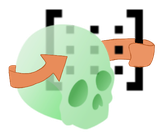

AutoMatrix — appliquer une matrice à toute une série de fichiers
AutoMatrix applique une ou plusieurs matrices de transformation ITK à tout un dossier de volumes et de fichiers de landmarks, en une seule fois. Pas de réseau de neurones, pas de GPU : c'est un outil de mise en lot, pas de calcul — la matrice, vous l'obtenez d'un recalage fait ailleurs.
Quand s'en servir
Vous avez lancé un module de recalage (AREG, ASO, FlexReg…) et vous en avez tiré une
matrice de transformation (.tfm). Vous voulez maintenant appliquer cette
même matrice à d'autres fichiers du même patient — une segmentation, un second volume,
des landmarks — sans rouvrir chacun dans Slicer. Ou vous avez fait ce recalage pour toute
une série de patients et vous voulez traiter le dossier entier d'un coup. C'est le rôle
d'AutoMatrix : il ne recale rien lui-même, il rejoue une transformation déjà calculée.
Appliquée à un volume, la matrice déplace son contenu. Appliquée à un fichier de landmarks, elle déplace les points exactement du même mouvement. C'est ce qui garantit qu'un scan et ses repères restent alignés après être passés par AutoMatrix — à condition d'utiliser la même matrice pour les deux.
Comment les fichiers et les matrices se retrouvent
AutoMatrix ne vous demande jamais de désigner à la main quelle matrice va avec quel
patient. Il devine la paire en comparant les noms de fichiers : il retire une liste de
mots-clés connus (_Seg, _Or, _MAND,
_CB, un horodatage _T1, _T2…) du nom du scan, et
une liste légèrement différente du nom de la matrice, jusqu'à obtenir dans les deux cas
un identifiant de patient. Si les deux identifiants obtenus sont identiques, le fichier
et la matrice sont appariés.
Le problème : ces deux listes de mots-clés ne sont pas les mêmes. La règle qui
fonctionne de façon fiable : faites commencer chaque nom de fichier par l'identifiant du
patient, suivi d'un underscore, puis de ce que vous voulez. Exemple qui marche :
patient1_T1_MA.nii.gz et patient1_left_MA.tfm s'apparient tous
les deux sur patient1, parce que _T1 est reconnu côté scan et
_left côté matrice. Exemple qui échoue : patient1_MA.nii.gz
sans horodatage donne la clé patient1_MA côté scan, mais
patient1 côté matrice — les deux ne correspondent plus, et ce fichier ne
recevra aucune matrice.
Un raccourci existe : si vous indiquez un seul fichier de matrice, et non un dossier, il est appliqué tel quel à tous les patients du dossier d'entrée, sans qu'aucun nom n'ait besoin de correspondre.
Ce qu'il vous faut, ce que vous obtenez
À fournir
- Un dossier de volumes en
.nii,.nii.gzou.nrrd, et/ou de fichiers de landmarks Slicer (.mrk.json) - Une matrice ITK (
.tfm,.h5ou.mat), ou un dossier de matrices nommées selon la même règle que les scans - À cocher si vos volumes sont des segmentations : la case dédiée, pour que les étiquettes ne soient pas lissées à l'interpolation
- Optionnel : un fichier de référence pour imposer la grille (taille, orientation) des sorties
Ce qui sort
- Une version transformée de chaque fichier apparié, rangée dans la même arborescence que l'entrée
- Les fichiers d'origine ne sont jamais modifiés
- Dans un fichier de landmarks, seuls les points marqués comme définis se déplacent
- Aucune nouvelle matrice n'est produite : AutoMatrix consomme des transformations, il n'en écrit pas
Marche à suivre
- Désignez le dossier d'entrée. Scans et/ou fichiers de landmarks à transformer ; tout le dossier est traité d'un coup.
- Désignez la matrice ou le dossier de matrices. Vérifiez que les noms suivent la règle patient + suffixe (ci-dessus), ou pointez directement un seul fichier pour l'appliquer à tout le monde.
- Cochez la case segmentation si vos volumes sont des labelmaps.
- Donnez un fichier de référence si vous voulez imposer la grille de sortie ; sinon chaque fichier garde la grille de son volume d'entrée, et tout ce qui sort du champ de vue après transformation est perdu.
- Choisissez un suffixe de sortie, et décidez si le nom de la matrice doit y être ajouté — utile dès qu'un patient a plusieurs matrices (voir plus bas).
- Indiquez le dossier de sortie, puis lancez. Une barre de progression suit les fichiers traités.
Inverser gauche/droite sans chercher de matrice
Si vous avez seulement besoin d'un miroir gauche/droite, inutile de fabriquer votre
propre matrice : le mode Mirror télécharge une matrice de réflexion toute prête et la
place dans le champ matrice à votre place, avec un suffixe de sortie dédié
(_mir).
La réflexion se fait par rapport au plan sagittal de l'origine de la scène, pas par rapport à celui du patient. Si votre patient n'est pas déjà centré dans la scène, le résultat sera à la fois miroité et décalé — prévoyez un recalage après coup pour rattraper le décalage.
Si ça coince
L'interface propose encore les maillages (.vtk, .vtp,
.stl, .off, .obj) comme scans d'entrée pour les
empreintes optiques, et les matrices en .npy — les deux sont comptés dans
la barre de progression, mais aucun des deux ne produit de sortie : chaque fichier de
ce type est simplement ignoré, avec une ligne dans le journal d'erreurs. Une matrice en
.txt ne fonctionne que si c'est un fichier de transformation ITK, pas un
simple tableau 4×4.
Si le nom d'un scan et celui d'une matrice ne se réduisent pas au même identifiant de patient (voir plus haut), ce fichier ne sera tout simplement pas transformé — sans message d'erreur ni avertissement visible. Si un patient manque à l'arrivée, la première chose à vérifier est le nom de ses fichiers.
Si vous décochez l'option qui ajoute le nom de la matrice au fichier de sortie, et qu'un même patient a plusieurs matrices, tous les résultats portent le même nom : chacun écrase le précédent, et il ne reste que la dernière matrice traitée. Laissez cette option cochée dès que vous appliquez plus d'une matrice par patient.
Certaines transformations (déformation dense, B-spline) ne peuvent pas être inversées mathématiquement. Quand c'est le cas, le fichier de landmarks correspondant est sauté avec un simple avertissement dans le journal, alors que le volume, lui, est bien transformé — le scan et ses repères peuvent donc se retrouver désynchronisés sans que rien ne le signale à l'écran.
Quand un patient a plusieurs matrices, chacune est appliquée séparément au fichier d'entrée d'origine : vous obtenez un fichier de sortie par matrice, jamais une composition de l'une avec l'autre.
Pour aller plus loin
Aucune publication, et il n'y a rien à publier : le module applique des matrices de transformation à des fichiers, en série. Ce qui compte est de savoir ce qu'est une matrice dans Slicer et dans quel repère elle s'exprime.
Autour de la méthode
- Documentation 3D Slicer — Transforms. Ce qu'est une transformation linéaire dans Slicer, comment elle s'applique et comment on l'inverse.
- Documentation 3D Slicer — Coordinate systems. RAS, LPS, et pourquoi une matrice correcte appliquée dans le mauvais repère retourne votre patient.
La bibliographie complète de l'outil — ce qui a été trouvé, et ce qui a été cherché sans rien trouver — est dans ses sources.
Comment ça marche vraiment → La fiche Atlas : la convention de transformation ITK, le détail de l'appariement fichier ↔ matrice, les formats réellement lus, et tous les pièges relevés dans le code.